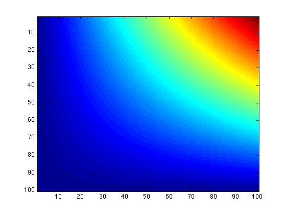
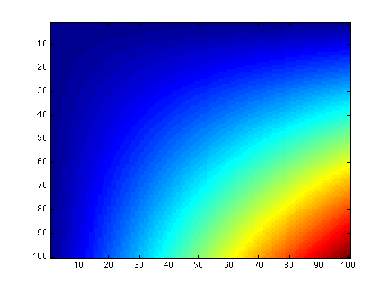
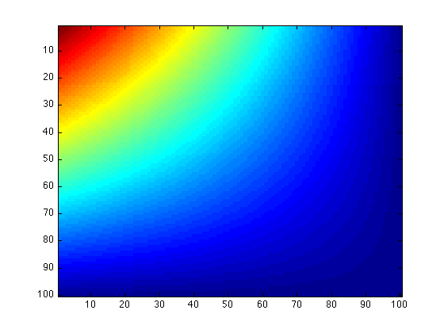
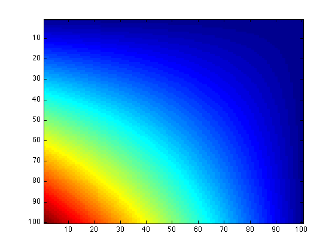
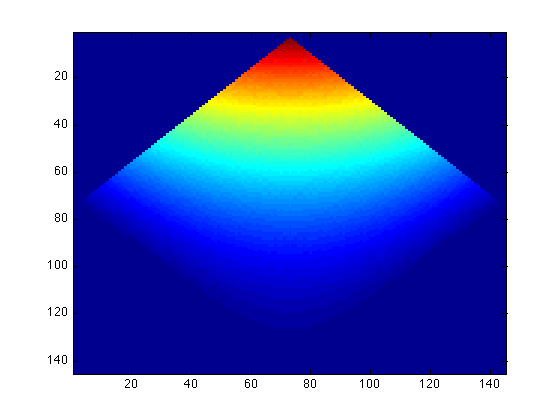
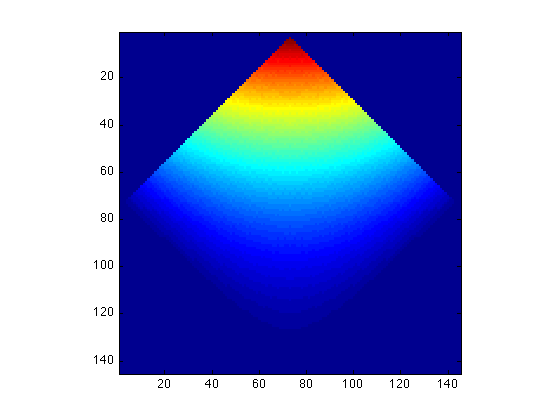

Image Processing: Flip and Rotate
Contents
Here we use a sample data array A as our example. The image of A is
imagesc(A)
Flipping Images
Flipping images is easy and straightforward in MATLAB. If you want to flip your array up to down, use flipud:
udA = flipud(A); imagesc(udA)
Or you can simply type
imagesc(flipud(A))
to make the image of A upside down.
Similarly, to flip your array or image left to right, use
lrA = fliplr(A); imagesc(lrA)
or just
imagesc(fliplr(A))
which will return the same result.
Transpose
The transpose of a MxN matrix (or array) is a NxM matrix with its (i, j) element equals to the (j, i) element of the original matrix. MATLAB provides the arithmetic operator ' to calculate the transpose of a matrix or array:
SampleArray
SampleArray =
1 3 5
2 4 6
SampleArray'
ans =
1 2
3 4
5 6
This can be used to "transpose" images:
imagesc(A')
Rotate
Flipping and transposing both belong to image rotation, with rotating angle 90, 180, or 270 (equals to -90) degrees. Sometimes we may want to rotate our images by some arbitrary degrees. This can be done by calling the MATLAB internal function imrotate(array, angle).
First of all, we must rotate the data array which generates the image:
RotateA = imrotate(A, 45);
This means we want to rotate data array A by 45 degrees and save it in array RotateA. Note that the rotation is in a counterclockwise direction around the array's center point. You can specify a negative value for angle to rotate the image clockwise.
We can now plot RotateA to see the rotated image:
imagesc(RotateA)
You may notice that the image is still rectangular; this is because the function imrotate makes the output array large enough to contain the entire rotated image by setting the values of pixels in RotateA that are outside the rotated image to zero.
You may also notice that the shape of pixels changed. To enforce the pixels to be square, type
axis image;
 after your imagesc command. This sets the aspect ratio so that the data units are the same in every direction, and makes the plot box fit tightly around the data.
Exercise
If you imrotate the rotated array RotateA by -45 degrees, what will the image look like? Is it the same as the image produced by A?